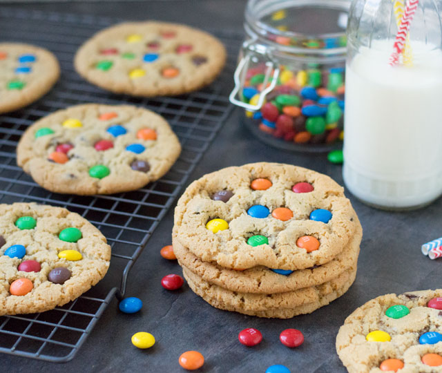

225 gram zelfrijzend bakmeel
125 gram ongezouten roomboter (op kamertemperatuur)
100 gram lichtbruine basterdsuiker
125 gram suiker
1 ei
1 zakje vanille suiker
baking soda
100 gram pure chocolade (in kleine stukjes)
100-125 gram M&M's chocolade

Verwarm de oven voor op 175 graden.
In een ruime kom doe je de boter, lichtbruine basterdsuiker, suiker en vanillesuiker. Mix dit goed door elkaar met een handmixer of een keukenmachine. Voeg dan het ei toe en mix het weer even door. Tot slot doe je het zelfrijzend bakmeel en de baking soda erbij. Mix dit weer goed door tot je een mooi stevig deeg hebt. Kneed tot slot de chocolade erdoor.
Maak nu balletjes van het deeg (ongeveer even groot als een walnoot) en leg deze op een met bakpapier beklede bakplaat. Druk de balletjes iets aan en zorg ervoor dat je een paar centimeter tussen de koekjes laat (tijdens het bakken worden ze namelijk iets groter). Gebruik eventueel 2 bakplaten als het niet op 1 bakplaat past en bak de koekjes dan in 2 delen af.
Schuif de bakplaat in de oven en bak de koekjes in ongeveer 10 tot 12 minuten mooi licht goudbruin.
Zodra ze uit de oven komen druk je de M&M's in de koekjes, gebruik hiervoor net zoveel M&M's als je lekker lijkt. Meestal gebruik ik zelf zo'n 100 tot 125 gram M&M's.
Laat de koekjes daarna even afkoelen en... eet smakelijk!
©De Bakfabriek
De Bakfabriek is niet verantwoordelijk voor allergische reacties